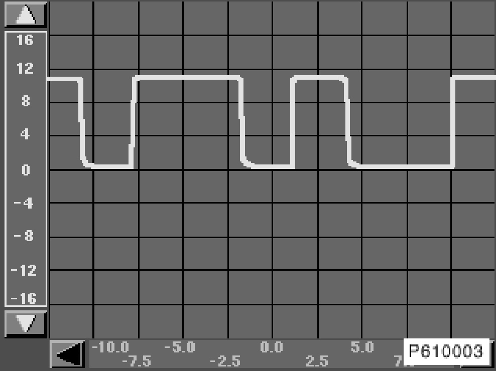
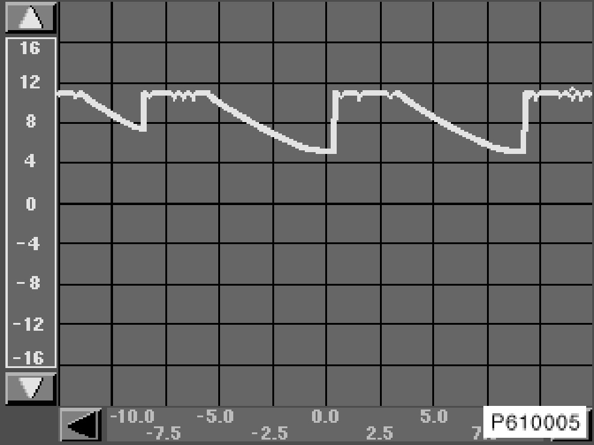
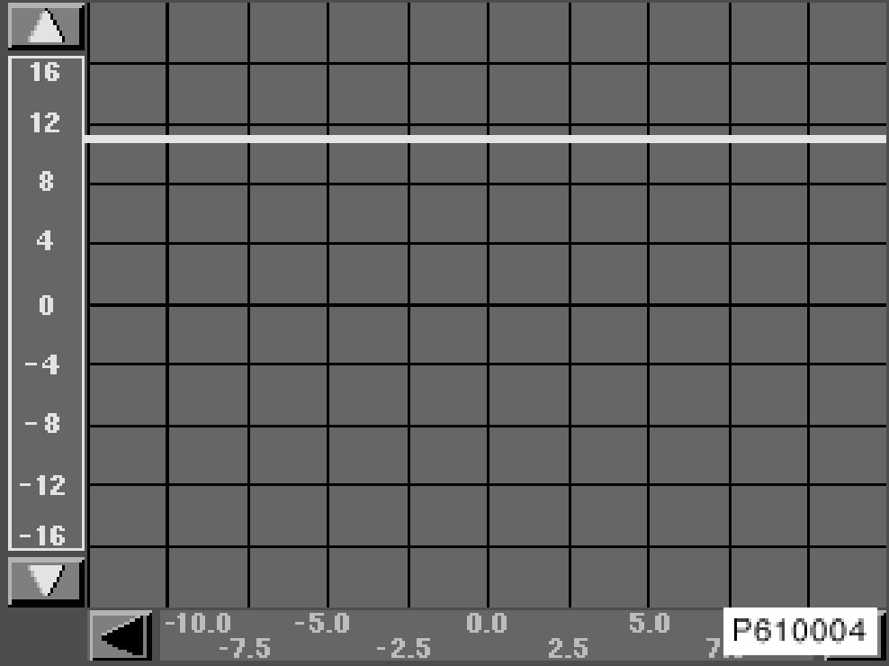
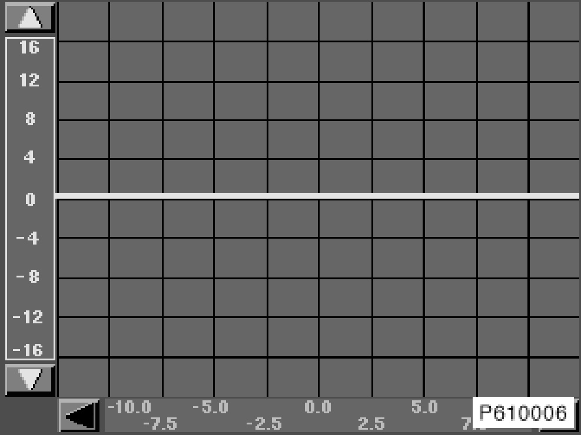

Comparison Images EWS Oscilloscope Measurement
Comparison Images EWS Oscilloscope Measurement
IMPORTANT: During the measurement, the DME/DDE must be connected.

Fig. 1: Signal OK.
Bear in mind that the statement "OK" only refers to the data line and the signal form. It is unable to determine whether the transmitted code is correct.

Fig. 2: Signal NOT OK.
The above signal indicates a fault in the DME/DDE.

Fig. 3: Signal NOT OK
The above signal indicates that the electronic vehicle immobilizer is not isolated or that there is a short to positive.

Fig. 4: Signal NOT OK
The above signal indicates a short circuit to ground or an open circuit.